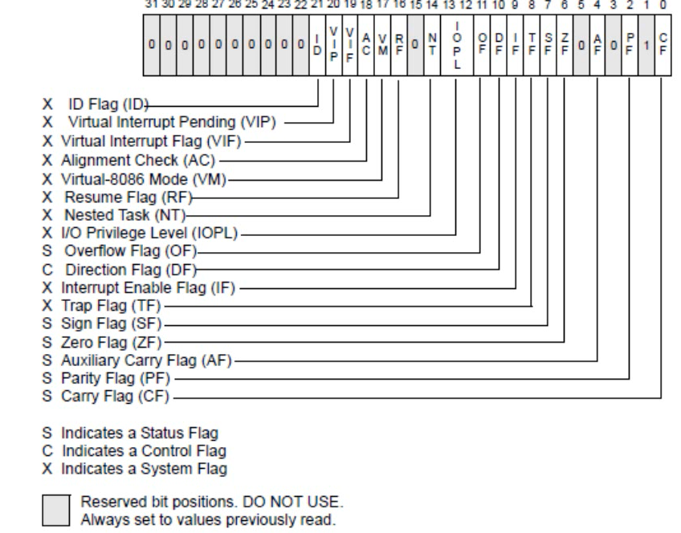
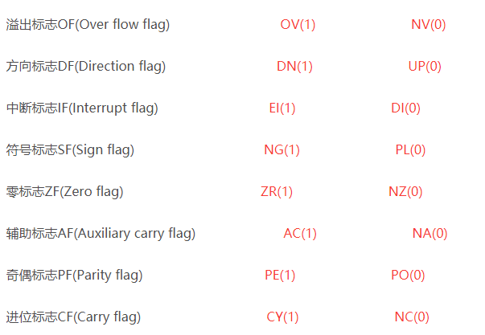

<!DOCTYPE html>
<html lang="en">
<head>
    <meta charset="utf-8">
    
    <title>汇编基础01：基础概念 | kn0sky&#39;wiki</title>
    
    
        <meta name="keywords" content="kn0sky">
    
    <meta name="viewport" content="width=device-width, initial-scale=1, maximum-scale=1">
    <meta name="description" content="汇编基础01：基础概念汇编语言为什么要学汇编  开发 高级语言内联汇编 Windows内核编程 逆向分析（需要精通汇编）  汇编语言与机器语言的区别  汇编语言是机器语言的助记符，几乎是一一对应的  16&#x2F;32&#x2F;64位汇编的区别 16位汇编：实模式，16位处理器内部，最多处理存储长度为16位 32位汇编：保护模式，32位处理器内部，最多处理存储长度为32位 64位汇编：保护模式，64位处理器内部，">
<meta property="og:type" content="article">
<meta property="og:title" content="汇编基础01：基础概念">
<meta property="og:url" content="http://kn0sky.com/wiki/%E5%AD%A6%E4%B9%A0%E7%AC%94%E8%AE%B0/%E6%B1%87%E7%BC%96%E5%9F%BA%E7%A1%80%E5%AD%A6%E4%B9%A0%E7%AC%94%E8%AE%B0/%E6%B1%87%E7%BC%96%E5%9F%BA%E7%A1%8001--%E5%9F%BA%E7%A1%80%E6%A6%82%E5%BF%B5/index.html">
<meta property="og:site_name" content="kn0sky&#39;wiki">
<meta property="og:description" content="汇编基础01：基础概念汇编语言为什么要学汇编  开发 高级语言内联汇编 Windows内核编程 逆向分析（需要精通汇编）  汇编语言与机器语言的区别  汇编语言是机器语言的助记符，几乎是一一对应的  16&#x2F;32&#x2F;64位汇编的区别 16位汇编：实模式，16位处理器内部，最多处理存储长度为16位 32位汇编：保护模式，32位处理器内部，最多处理存储长度为32位 64位汇编：保护模式，64位处理器内部，">
<meta property="og:locale" content="en_US">
<meta property="og:image" content="http://kn0sky.com/wiki/%E5%AD%A6%E4%B9%A0%E7%AC%94%E8%AE%B0/%E6%B1%87%E7%BC%96%E5%9F%BA%E7%A1%80%E5%AD%A6%E4%B9%A0%E7%AC%94%E8%AE%B0/%E6%B1%87%E7%BC%96%E5%9F%BA%E7%A1%8001--%E5%9F%BA%E7%A1%80%E6%A6%82%E5%BF%B5/EFLAGS.png">
<meta property="og:image" content="http://kn0sky.com/wiki/%E5%AD%A6%E4%B9%A0%E7%AC%94%E8%AE%B0/%E6%B1%87%E7%BC%96%E5%9F%BA%E7%A1%80%E5%AD%A6%E4%B9%A0%E7%AC%94%E8%AE%B0/%E6%B1%87%E7%BC%96%E5%9F%BA%E7%A1%8001--%E5%9F%BA%E7%A1%80%E6%A6%82%E5%BF%B5/image-20200526084223252.png">
<meta property="article:published_time" content="2020-03-30T06:27:19.000Z">
<meta property="article:modified_time" content="2020-05-26T00:42:28.000Z">
<meta property="article:author" content="kn0sky">
<meta property="article:tag" content="kn0sky">
<meta name="twitter:card" content="summary">
<meta name="twitter:image" content="http://kn0sky.com/wiki/%E5%AD%A6%E4%B9%A0%E7%AC%94%E8%AE%B0/%E6%B1%87%E7%BC%96%E5%9F%BA%E7%A1%80%E5%AD%A6%E4%B9%A0%E7%AC%94%E8%AE%B0/%E6%B1%87%E7%BC%96%E5%9F%BA%E7%A1%8001--%E5%9F%BA%E7%A1%80%E6%A6%82%E5%BF%B5/EFLAGS.png">
    

    
        <link rel="alternate" href="/atom.xml" title="kn0sky&#39;wiki" type="application/atom+xml">
    

    
        <link rel="icon" href="/favicon.ico">
    

    
<link rel="stylesheet" href="/libs/font-awesome/css/font-awesome.min.css">

    
<link rel="stylesheet" href="/libs/open-sans/styles.css">

    
<link rel="stylesheet" href="/libs/source-code-pro/styles.css">


    
<link rel="stylesheet" href="/css/style.css">

    
<script src="/libs/jquery/2.1.3/jquery.min.js"></script>

    
<script src="/libs/jquery/plugins/cookie/1.4.1/jquery.cookie.js"></script>

    
    
        
<link rel="stylesheet" href="/libs/lightgallery/css/lightgallery.min.css">

    
    
        
<link rel="stylesheet" href="/libs/justified-gallery/justifiedGallery.min.css">

    
    
    
    


    
        <script async src="//busuanzi.ibruce.info/busuanzi/2.3/busuanzi.pure.mini.js"></script>
    
<meta name="generator" content="Hexo 4.2.0"></head>
</html>
<body>
    <div id="container">
        <header id="header">
    <div id="header-main" class="header-inner">
        <div class="outer">
            <a href="/" id="logo">
                <i class="logo"></i>
                <span class="site-title">kn0sky&#39;wiki</span>
            </a>
            <nav id="main-nav">
                
                    <a class="main-nav-link" href="/">首页</a>
                
                    <a class="main-nav-link" href="/archives">归档</a>
                
                    <a class="main-nav-link" href="/categories">分类</a>
                
                    <a class="main-nav-link" href="/tags">标签</a>
                
                    <a class="main-nav-link" href="/about">关于</a>
                
            </nav>
            
            <div id="search-form-wrap">

    <form class="search-form">
        <input type="text" class="ins-search-input search-form-input" placeholder="Search">
        <button type="submit" class="search-form-submit"></button>
    </form>
    <div class="ins-search">
    <div class="ins-search-mask"></div>
    <div class="ins-search-container">
        <div class="ins-input-wrapper">
            <input type="text" class="ins-search-input" placeholder="Type something...">
            <span class="ins-close ins-selectable"><i class="fa fa-times-circle"></i></span>
        </div>
        <div class="ins-section-wrapper">
            <div class="ins-section-container"></div>
        </div>
    </div>
</div>
<script>
(function (window) {
    var INSIGHT_CONFIG = {
        TRANSLATION: {
            POSTS: 'Posts',
            PAGES: 'Pages',
            CATEGORIES: 'Categories',
            TAGS: 'Tags',
            UNTITLED: '(Untitled)',
        },
        ROOT_URL: '/',
        CONTENT_URL: '/content.json',
    };
    window.INSIGHT_CONFIG = INSIGHT_CONFIG;
})(window);
</script>

<script src="/js/insight.js"></script>


</div>
        </div>
    </div>
    <div id="main-nav-mobile" class="header-sub header-inner">
        <table class="menu outer">
            <tr>
                
                    <td><a class="main-nav-link" href="/">首页</a></td>
                
                    <td><a class="main-nav-link" href="/archives">归档</a></td>
                
                    <td><a class="main-nav-link" href="/categories">分类</a></td>
                
                    <td><a class="main-nav-link" href="/tags">标签</a></td>
                
                    <td><a class="main-nav-link" href="/about">关于</a></td>
                
                <td>
                    
    <div class="search-form">
        <input type="text" class="ins-search-input search-form-input" placeholder="Search">
    </div>

                </td>
            </tr>
        </table>
    </div>
</header>

        <div class="outer">
            
            
                <aside id="sidebar">
   
        
    <div class="widget-wrap" id="categories">
        <h3 class="widget-title">
            <span>categories</span>
            &nbsp;
            <a id="allExpand" href="#">
                <i class="fa fa-angle-double-down fa-2x"></i>
            </a>
        </h3>
        
        
        
         <ul class="unstyled" id="tree"> 
                    <li class="directory">
                        <a href="#" data-role="directory">
                            <i class="fa fa-folder"></i>
                            &nbsp;
                            XCTF攻防世界WP
                        </a>
                         <ul class="unstyled" id="tree"> 
                    <li class="directory">
                        <a href="#" data-role="directory">
                            <i class="fa fa-folder"></i>
                            &nbsp;
                            新手练习区
                        </a>
                         <ul class="unstyled" id="tree"> 
                    <li class="directory">
                        <a href="#" data-role="directory">
                            <i class="fa fa-folder"></i>
                            &nbsp;
                            REVERSE
                        </a>
                         <ul class="unstyled" id="tree">  <li class="file"><a href="/wiki/XCTF%E6%94%BB%E9%98%B2%E4%B8%96%E7%95%8CWP/%E6%96%B0%E6%89%8B%E7%BB%83%E4%B9%A0%E5%8C%BA/REVERSE/re001-open-source/">open-source Write Up</a></li>  </ul> 
                    </li> 
                     </ul> 
                    </li> 
                     </ul> 
                    </li> 
                    
                    <li class="directory">
                        <a href="#" data-role="directory">
                            <i class="fa fa-folder"></i>
                            &nbsp;
                            备忘笔记
                        </a>
                         <ul class="unstyled" id="tree">  <li class="file"><a href="/wiki/%E5%A4%87%E5%BF%98%E7%AC%94%E8%AE%B0/%E5%B8%B8%E7%94%A8%E5%B7%A5%E5%85%B7%E6%B1%87%E6%80%BB/">常用工具备忘录</a></li>  <li class="file"><a href="/wiki/%E5%A4%87%E5%BF%98%E7%AC%94%E8%AE%B0/%E6%90%AD%E5%BB%BAhexo%E5%8D%9A%E5%AE%A2%E5%A4%87%E5%BF%98%E5%BD%95/">搭建hexo博客备忘录</a></li>  </ul> 
                    </li> 
                    
                    <li class="directory open">
                        <a href="#" data-role="directory">
                            <i class="fa fa-folder-open"></i>
                            &nbsp;
                            学习笔记
                        </a>
                         <ul class="unstyled" id="tree"> 
                    <li class="directory">
                        <a href="#" data-role="directory">
                            <i class="fa fa-folder"></i>
                            &nbsp;
                            51单片机学习笔记
                        </a>
                         <ul class="unstyled" id="tree">  <li class="file"><a href="/wiki/%E5%AD%A6%E4%B9%A0%E7%AC%94%E8%AE%B0/51%E5%8D%95%E7%89%87%E6%9C%BA%E5%AD%A6%E4%B9%A0%E7%AC%94%E8%AE%B0/51%E5%8D%95%E7%89%87%E6%9C%BA%E5%85%A5%E9%97%A801--LED%E6%B5%81%E6%B0%B4%E7%81%AF/">51单片机入门01--LED流水灯</a></li>  <li class="file"><a href="/wiki/%E5%AD%A6%E4%B9%A0%E7%AC%94%E8%AE%B0/51%E5%8D%95%E7%89%87%E6%9C%BA%E5%AD%A6%E4%B9%A0%E7%AC%94%E8%AE%B0/51%E5%8D%95%E7%89%87%E6%9C%BA%E5%85%A5%E9%97%A802--%E6%95%B0%E7%A0%81%E7%AE%A1/">51单片机入门02--数码管</a></li>  <li class="file"><a href="/wiki/%E5%AD%A6%E4%B9%A0%E7%AC%94%E8%AE%B0/51%E5%8D%95%E7%89%87%E6%9C%BA%E5%AD%A6%E4%B9%A0%E7%AC%94%E8%AE%B0/51%E5%8D%95%E7%89%87%E6%9C%BA%E5%85%A5%E9%97%A803--%E6%8C%89%E9%94%AE/">51单片机入门03--按键</a></li>  <li class="file"><a href="/wiki/%E5%AD%A6%E4%B9%A0%E7%AC%94%E8%AE%B0/51%E5%8D%95%E7%89%87%E6%9C%BA%E5%AD%A6%E4%B9%A0%E7%AC%94%E8%AE%B0/51%E5%8D%95%E7%89%87%E6%9C%BA%E5%85%A5%E9%97%A804--%E5%AE%9A%E6%97%B6&%E8%AE%A1%E6%95%B0%E5%99%A8/">51单片机入门04--定时&计数器</a></li>  </ul> 
                    </li> 
                    
                    <li class="directory">
                        <a href="#" data-role="directory">
                            <i class="fa fa-folder"></i>
                            &nbsp;
                            C++学习笔记
                        </a>
                         <ul class="unstyled" id="tree">  <li class="file"><a href="/wiki/%E5%AD%A6%E4%B9%A0%E7%AC%94%E8%AE%B0/C++%E5%AD%A6%E4%B9%A0%E7%AC%94%E8%AE%B0/C++%E8%AF%AD%E8%A8%80%E5%9F%BA%E7%A1%8001--%E5%88%9D%E8%A7%81C++/">C++基础01--初见C++</a></li>  </ul> 
                    </li> 
                    
                    <li class="directory">
                        <a href="#" data-role="directory">
                            <i class="fa fa-folder"></i>
                            &nbsp;
                            C语言学习笔记
                        </a>
                         <ul class="unstyled" id="tree">  <li class="file"><a href="/wiki/%E5%AD%A6%E4%B9%A0%E7%AC%94%E8%AE%B0/C%E8%AF%AD%E8%A8%80%E5%AD%A6%E4%B9%A0%E7%AC%94%E8%AE%B0/C%E8%AF%AD%E8%A8%80%E5%9F%BA%E7%A1%8001--%E5%88%9D%E8%A7%81C%E8%AF%AD%E8%A8%80/">C语言基础01--初见C语言</a></li>  <li class="file"><a href="/wiki/%E5%AD%A6%E4%B9%A0%E7%AC%94%E8%AE%B0/C%E8%AF%AD%E8%A8%80%E5%AD%A6%E4%B9%A0%E7%AC%94%E8%AE%B0/C%E8%AF%AD%E8%A8%80%E5%9F%BA%E7%A1%8002--%E6%9D%A1%E4%BB%B6%E8%AF%AD%E5%8F%A5/">C语言基础02--条件语句</a></li>  <li class="file"><a href="/wiki/%E5%AD%A6%E4%B9%A0%E7%AC%94%E8%AE%B0/C%E8%AF%AD%E8%A8%80%E5%AD%A6%E4%B9%A0%E7%AC%94%E8%AE%B0/C%E8%AF%AD%E8%A8%80%E5%9F%BA%E7%A1%8003--%E5%AE%8F&%E5%87%BD%E6%95%B0&%E6%95%B0%E7%BB%84/">C语言基础03--宏&函数&数组</a></li>  <li class="file"><a href="/wiki/%E5%AD%A6%E4%B9%A0%E7%AC%94%E8%AE%B0/C%E8%AF%AD%E8%A8%80%E5%AD%A6%E4%B9%A0%E7%AC%94%E8%AE%B0/C%E8%AF%AD%E8%A8%80%E5%9F%BA%E7%A1%8004--%E6%8C%87%E9%92%88/">C语言基础04--指针</a></li>  <li class="file"><a href="/wiki/%E5%AD%A6%E4%B9%A0%E7%AC%94%E8%AE%B0/C%E8%AF%AD%E8%A8%80%E5%AD%A6%E4%B9%A0%E7%AC%94%E8%AE%B0/C%E8%AF%AD%E8%A8%80%E5%9F%BA%E7%A1%8005--%E5%AD%97%E7%AC%A6%E4%B8%B2%E6%93%8D%E4%BD%9C/">C语言基础05--字符串操作</a></li>  <li class="file"><a href="/wiki/%E5%AD%A6%E4%B9%A0%E7%AC%94%E8%AE%B0/C%E8%AF%AD%E8%A8%80%E5%AD%A6%E4%B9%A0%E7%AC%94%E8%AE%B0/C%E8%AF%AD%E8%A8%80%E5%9F%BA%E7%A1%8006--%E5%AD%98%E5%82%A8%E7%B1%BB&%E5%86%85%E5%AD%98%E7%AE%A1%E7%90%86/">C语言基础06--存储类&内存管理</a></li>  <li class="file"><a href="/wiki/%E5%AD%A6%E4%B9%A0%E7%AC%94%E8%AE%B0/C%E8%AF%AD%E8%A8%80%E5%AD%A6%E4%B9%A0%E7%AC%94%E8%AE%B0/C%E8%AF%AD%E8%A8%80%E5%9F%BA%E7%A1%8007--%E6%96%87%E4%BB%B6%E6%93%8D%E4%BD%9C/">C语言基础07--文件操作</a></li>  <li class="file"><a href="/wiki/%E5%AD%A6%E4%B9%A0%E7%AC%94%E8%AE%B0/C%E8%AF%AD%E8%A8%80%E5%AD%A6%E4%B9%A0%E7%AC%94%E8%AE%B0/C%E8%AF%AD%E8%A8%80%E5%9F%BA%E7%A1%8008--%E7%BB%93%E6%9E%84%E4%BD%93/">C语言基础08--结构体</a></li>  <li class="file"><a href="/wiki/%E5%AD%A6%E4%B9%A0%E7%AC%94%E8%AE%B0/C%E8%AF%AD%E8%A8%80%E5%AD%A6%E4%B9%A0%E7%AC%94%E8%AE%B0/C%E8%AF%AD%E8%A8%80%E5%9F%BA%E7%A1%8009--C%E9%A2%84%E5%A4%84%E7%90%86%E5%99%A8%E5%92%8CC%E5%BA%93/">C语言基础09--C预处理器和C库</a></li>  </ul> 
                    </li> 
                    
                    <li class="directory">
                        <a href="#" data-role="directory">
                            <i class="fa fa-folder"></i>
                            &nbsp;
                            前端入门学习笔记
                        </a>
                         <ul class="unstyled" id="tree">  <li class="file"><a href="/wiki/%E5%AD%A6%E4%B9%A0%E7%AC%94%E8%AE%B0/%E5%89%8D%E7%AB%AF%E5%85%A5%E9%97%A8%E5%AD%A6%E4%B9%A0%E7%AC%94%E8%AE%B0/%E5%89%8D%E7%AB%AF%E5%85%A5%E9%97%A801--HTML&CSS%E5%9F%BA%E7%A1%80/">前端入门01--HTML和CSS基础</a></li>  </ul> 
                    </li> 
                    
                    <li class="directory">
                        <a href="#" data-role="directory">
                            <i class="fa fa-folder"></i>
                            &nbsp;
                            半导体物理学习笔记
                        </a>
                         <ul class="unstyled" id="tree">  <li class="file"><a href="/wiki/%E5%AD%A6%E4%B9%A0%E7%AC%94%E8%AE%B0/%E5%8D%8A%E5%AF%BC%E4%BD%93%E7%89%A9%E7%90%86%E5%AD%A6%E4%B9%A0%E7%AC%94%E8%AE%B0/%E5%8D%8A%E5%AF%BC%E4%BD%93%E7%89%A9%E7%90%8601--%E8%83%BD%E5%B8%A6%E7%90%86%E8%AE%BA/">半导体物理01--能带理论</a></li>  </ul> 
                    </li> 
                    
                    <li class="directory open">
                        <a href="#" data-role="directory">
                            <i class="fa fa-folder-open"></i>
                            &nbsp;
                            汇编基础学习笔记
                        </a>
                         <ul class="unstyled" id="tree">  <li class="file active"><a href="/wiki/%E5%AD%A6%E4%B9%A0%E7%AC%94%E8%AE%B0/%E6%B1%87%E7%BC%96%E5%9F%BA%E7%A1%80%E5%AD%A6%E4%B9%A0%E7%AC%94%E8%AE%B0/%E6%B1%87%E7%BC%96%E5%9F%BA%E7%A1%8001--%E5%9F%BA%E7%A1%80%E6%A6%82%E5%BF%B5/">汇编基础01：基础概念</a></li>  <li class="file"><a href="/wiki/%E5%AD%A6%E4%B9%A0%E7%AC%94%E8%AE%B0/%E6%B1%87%E7%BC%96%E5%9F%BA%E7%A1%80%E5%AD%A6%E4%B9%A0%E7%AC%94%E8%AE%B0/%E6%B1%87%E7%BC%96%E5%9F%BA%E7%A1%8002--%E7%AC%AC%E4%B8%80%E4%B8%AA%E7%A8%8B%E5%BA%8F/">汇编基础02：第一个程序</a></li>  <li class="file"><a href="/wiki/%E5%AD%A6%E4%B9%A0%E7%AC%94%E8%AE%B0/%E6%B1%87%E7%BC%96%E5%9F%BA%E7%A1%80%E5%AD%A6%E4%B9%A0%E7%AC%94%E8%AE%B0/%E6%B1%87%E7%BC%96%E5%9F%BA%E7%A1%8003--%E6%95%B0%E5%AD%A6%E8%BF%90%E7%AE%97&%E9%80%BB%E8%BE%91%E8%BF%90%E7%AE%97/">汇编基础03：数学运算&逻辑运算</a></li>  <li class="file"><a href="/wiki/%E5%AD%A6%E4%B9%A0%E7%AC%94%E8%AE%B0/%E6%B1%87%E7%BC%96%E5%9F%BA%E7%A1%80%E5%AD%A6%E4%B9%A0%E7%AC%94%E8%AE%B0/%E6%B1%87%E7%BC%96%E5%9F%BA%E7%A1%8004--%E5%BE%AA%E7%8E%AF/">汇编基础04：循环</a></li>  <li class="file"><a href="/wiki/%E5%AD%A6%E4%B9%A0%E7%AC%94%E8%AE%B0/%E6%B1%87%E7%BC%96%E5%9F%BA%E7%A1%80%E5%AD%A6%E4%B9%A0%E7%AC%94%E8%AE%B0/%E6%B1%87%E7%BC%96%E5%9F%BA%E7%A1%8005--%E5%A0%86%E6%A0%88/">汇编基础05：堆栈</a></li>  <li class="file"><a href="/wiki/%E5%AD%A6%E4%B9%A0%E7%AC%94%E8%AE%B0/%E6%B1%87%E7%BC%96%E5%9F%BA%E7%A1%80%E5%AD%A6%E4%B9%A0%E7%AC%94%E8%AE%B0/%E6%B1%87%E7%BC%96%E5%9F%BA%E7%A1%8006--%E6%95%B0%E6%8D%AE%E4%BC%A0%E9%80%81%E6%8C%87%E4%BB%A4/">汇编基础06：数据传送指令</a></li>  <li class="file"><a href="/wiki/%E5%AD%A6%E4%B9%A0%E7%AC%94%E8%AE%B0/%E6%B1%87%E7%BC%96%E5%9F%BA%E7%A1%80%E5%AD%A6%E4%B9%A0%E7%AC%94%E8%AE%B0/%E6%B1%87%E7%BC%96%E5%9F%BA%E7%A1%8007--%E6%AF%94%E8%BE%83%E6%8C%87%E4%BB%A4/">汇编基础07：比较指令</a></li>  <li class="file"><a href="/wiki/%E5%AD%A6%E4%B9%A0%E7%AC%94%E8%AE%B0/%E6%B1%87%E7%BC%96%E5%9F%BA%E7%A1%80%E5%AD%A6%E4%B9%A0%E7%AC%94%E8%AE%B0/%E6%B1%87%E7%BC%96%E5%9F%BA%E7%A1%8008--JCC%E6%8C%87%E4%BB%A4/">汇编基础08： JCC 转移指令</a></li>  <li class="file"><a href="/wiki/%E5%AD%A6%E4%B9%A0%E7%AC%94%E8%AE%B0/%E6%B1%87%E7%BC%96%E5%9F%BA%E7%A1%80%E5%AD%A6%E4%B9%A0%E7%AC%94%E8%AE%B0/%E6%B1%87%E7%BC%96%E5%9F%BA%E7%A1%8009--%E4%BC%A0%E9%80%81%E6%8C%87%E4%BB%A4/">汇编基础09--传送指令</a></li>  <li class="file"><a href="/wiki/%E5%AD%A6%E4%B9%A0%E7%AC%94%E8%AE%B0/%E6%B1%87%E7%BC%96%E5%9F%BA%E7%A1%80%E5%AD%A6%E4%B9%A0%E7%AC%94%E8%AE%B0/%E6%B1%87%E7%BC%96%E5%9F%BA%E7%A1%8012--%E6%95%B0%E7%BB%84%E5%92%8C%E7%BB%93%E6%9E%84%E4%BD%93/">汇编基础12--数组和结构体</a></li>  <li class="file"><a href="/wiki/%E5%AD%A6%E4%B9%A0%E7%AC%94%E8%AE%B0/%E6%B1%87%E7%BC%96%E5%9F%BA%E7%A1%80%E5%AD%A6%E4%B9%A0%E7%AC%94%E8%AE%B0/%E6%B1%87%E7%BC%96%E5%9F%BA%E7%A1%8011--win32%E6%B1%87%E7%BC%96/">汇编基础11--win32汇编</a></li>  <li class="file"><a href="/wiki/%E5%AD%A6%E4%B9%A0%E7%AC%94%E8%AE%B0/%E6%B1%87%E7%BC%96%E5%9F%BA%E7%A1%80%E5%AD%A6%E4%B9%A0%E7%AC%94%E8%AE%B0/%E6%B1%87%E7%BC%96%E5%9F%BA%E7%A1%8010--%E4%BD%BF%E7%94%A8%E5%87%BD%E6%95%B0/">汇编基础10--使用函数</a></li>  <li class="file"><a href="/wiki/%E5%AD%A6%E4%B9%A0%E7%AC%94%E8%AE%B0/%E6%B1%87%E7%BC%96%E5%9F%BA%E7%A1%80%E5%AD%A6%E4%B9%A0%E7%AC%94%E8%AE%B0/%E6%B1%87%E7%BC%96%E4%BD%9C%E4%B8%9A--%E7%94%B5%E8%AF%9D%E7%B0%BF/">汇编作业--电话簿</a></li>  <li class="file"><a href="/wiki/%E5%AD%A6%E4%B9%A0%E7%AC%94%E8%AE%B0/%E6%B1%87%E7%BC%96%E5%9F%BA%E7%A1%80%E5%AD%A6%E4%B9%A0%E7%AC%94%E8%AE%B0/%E6%B1%87%E7%BC%96%E5%9F%BA%E7%A1%8013--%E9%97%B4%E6%8E%A5%E5%AF%BB%E5%9D%80/">汇编基础13--间接寻址</a></li>  </ul> 
                    </li> 
                    
                    <li class="directory">
                        <a href="#" data-role="directory">
                            <i class="fa fa-folder"></i>
                            &nbsp;
                            王道计组书学习笔记
                        </a>
                         <ul class="unstyled" id="tree">  <li class="file"><a href="/wiki/%E5%AD%A6%E4%B9%A0%E7%AC%94%E8%AE%B0/%E7%8E%8B%E9%81%93%E8%AE%A1%E7%BB%84%E4%B9%A6%E5%AD%A6%E4%B9%A0%E7%AC%94%E8%AE%B0/%E7%8E%8B%E9%81%93%E8%AE%A1%E7%BB%84%E7%AC%94%E8%AE%B001--%E8%AE%A1%E7%AE%97%E6%9C%BA%E7%B3%BB%E7%BB%9F%E6%A6%82%E8%BF%B0/">王道计组笔记01--计算机系统概述</a></li>  </ul> 
                    </li> 
                    
                    <li class="directory">
                        <a href="#" data-role="directory">
                            <i class="fa fa-folder"></i>
                            &nbsp;
                            逆向入门学习笔记
                        </a>
                         <ul class="unstyled" id="tree">  <li class="file"><a href="/wiki/%E5%AD%A6%E4%B9%A0%E7%AC%94%E8%AE%B0/%E9%80%86%E5%90%91%E5%85%A5%E9%97%A8%E5%AD%A6%E4%B9%A0%E7%AC%94%E8%AE%B0/%E9%80%86%E5%90%91%E5%9F%BA%E7%A1%8001--%E5%88%9D%E8%A7%81%E9%80%86%E5%90%91/">逆向基础01--初见逆向</a></li>  <li class="file"><a href="/wiki/%E5%AD%A6%E4%B9%A0%E7%AC%94%E8%AE%B0/%E9%80%86%E5%90%91%E5%85%A5%E9%97%A8%E5%AD%A6%E4%B9%A0%E7%AC%94%E8%AE%B0/%E9%80%86%E5%90%91%E5%9F%BA%E7%A1%8002--%E5%88%9D%E8%AF%95%E7%A0%B4%E8%A7%A3/">逆向基础02--初试破解</a></li>  </ul> 
                    </li> 
                     </ul> 
                    </li> 
                    
                    <li class="directory">
                        <a href="#" data-role="directory">
                            <i class="fa fa-folder"></i>
                            &nbsp;
                            审计笔记
                        </a>
                         <ul class="unstyled" id="tree">  <li class="file"><a href="/wiki/%E5%AE%A1%E8%AE%A1%E7%AC%94%E8%AE%B0/PHP%E4%BB%A3%E7%A0%81%E8%B0%83%E8%AF%95%E7%8E%AF%E5%A2%83%E6%90%AD%E5%BB%BA/">PHP代码调试环境搭建</a></li>  </ul> 
                    </li> 
                    
                    <li class="directory">
                        <a href="#" data-role="directory">
                            <i class="fa fa-folder"></i>
                            &nbsp;
                            折腾笔记
                        </a>
                         <ul class="unstyled" id="tree"> 
                    <li class="directory">
                        <a href="#" data-role="directory">
                            <i class="fa fa-folder"></i>
                            &nbsp;
                            博客搭建
                        </a>
                         <ul class="unstyled" id="tree">  <li class="file"><a href="/wiki/%E6%8A%98%E8%85%BE%E7%AC%94%E8%AE%B0/%E5%8D%9A%E5%AE%A2%E6%90%AD%E5%BB%BA/%E4%BD%BF%E7%94%A8hexo%E6%90%AD%E5%BB%BAwiki/">使用hexo搭建个人wiki</a></li>  <li class="file"><a href="/wiki/%E6%8A%98%E8%85%BE%E7%AC%94%E8%AE%B0/%E5%8D%9A%E5%AE%A2%E6%90%AD%E5%BB%BA/%E5%80%9F%E5%8A%A9%E4%BA%91%E6%9C%8D%E5%8A%A1%E5%99%A8%E5%AE%9E%E7%8E%B0hexo%E5%85%A8%E8%87%AA%E5%8A%A8%E9%83%A8%E7%BD%B2/">借助云服务器实现hexo全自动部署</a></li>  <li class="file"><a href="/wiki/%E6%8A%98%E8%85%BE%E7%AC%94%E8%AE%B0/%E5%8D%9A%E5%AE%A2%E6%90%AD%E5%BB%BA/hexo%E8%81%94%E5%8A%A8Typora/">hexo联动Typora</a></li>  </ul> 
                    </li> 
                    
                    <li class="directory">
                        <a href="#" data-role="directory">
                            <i class="fa fa-folder"></i>
                            &nbsp;
                            手机连接电脑
                        </a>
                         <ul class="unstyled" id="tree">  <li class="file"><a href="/wiki/%E6%8A%98%E8%85%BE%E7%AC%94%E8%AE%B0/%E6%89%8B%E6%9C%BA%E8%BF%9E%E6%8E%A5%E7%94%B5%E8%84%91/%E4%BD%BF%E7%94%A8%E6%89%8B%E6%9C%BA%E6%89%A9%E5%B1%95%E7%94%B5%E8%84%91%E5%B1%8F%E5%B9%95/">使用手机扩展电脑屏幕</a></li>  <li class="file"><a href="/wiki/%E6%8A%98%E8%85%BE%E7%AC%94%E8%AE%B0/%E6%89%8B%E6%9C%BA%E8%BF%9E%E6%8E%A5%E7%94%B5%E8%84%91/%E4%BD%BF%E7%94%A8%E7%94%B5%E8%84%91%E6%8E%A7%E5%88%B6%E6%89%8B%E6%9C%BA/">使用电脑控制手机</a></li>  </ul> 
                    </li> 
                     </ul> 
                    </li> 
                    
                    <li class="directory">
                        <a href="#" data-role="directory">
                            <i class="fa fa-folder"></i>
                            &nbsp;
                            概念笔记
                        </a>
                         <ul class="unstyled" id="tree">  <li class="file"><a href="/wiki/%E6%A6%82%E5%BF%B5%E7%AC%94%E8%AE%B0/%E5%AF%84%E5%AD%98%E5%99%A8%E9%80%BB%E8%BE%91%E7%BB%93%E6%9E%84/">寄存器逻辑结构</a></li>  <li class="file"><a href="/wiki/%E6%A6%82%E5%BF%B5%E7%AC%94%E8%AE%B0/%E5%86%85%E5%AD%98/">内存</a></li>  </ul> 
                    </li> 
                    
                    <li class="directory">
                        <a href="#" data-role="directory">
                            <i class="fa fa-folder"></i>
                            &nbsp;
                            渗透笔记
                        </a>
                         <ul class="unstyled" id="tree"> 
                    <li class="directory">
                        <a href="#" data-role="directory">
                            <i class="fa fa-folder"></i>
                            &nbsp;
                            常见服务
                        </a>
                         <ul class="unstyled" id="tree">  <li class="file"><a href="/wiki/%E6%B8%97%E9%80%8F%E7%AC%94%E8%AE%B0/%E5%B8%B8%E8%A7%81%E6%9C%8D%E5%8A%A1/%E5%B8%B8%E8%A7%81%E7%AB%AF%E5%8F%A3&%E6%BC%8F%E6%B4%9E/">常见端口号&漏洞</a></li>  </ul> 
                    </li> 
                     </ul> 
                    </li> 
                    
                    <li class="directory">
                        <a href="#" data-role="directory">
                            <i class="fa fa-folder"></i>
                            &nbsp;
                            靶机笔记
                        </a>
                         <ul class="unstyled" id="tree"> 
                    <li class="directory">
                        <a href="#" data-role="directory">
                            <i class="fa fa-folder"></i>
                            &nbsp;
                            vulnhub
                        </a>
                         <ul class="unstyled" id="tree">  <li class="file"><a href="/wiki/%E9%9D%B6%E6%9C%BA%E7%AC%94%E8%AE%B0/vulnhub/5-MeAndMyGirlfriend/">【Vulnhub】Me And My Girlfriend--Workthourgh</a></li>  <li class="file"><a href="/wiki/%E9%9D%B6%E6%9C%BA%E7%AC%94%E8%AE%B0/vulnhub/6-nightfall/">【Vulnhub】Sunset:nightfall--Workthourgh：未完成</a></li>  </ul> 
                    </li> 
                     </ul> 
                    </li> 
                     <li class="file"><a href="/wiki/test/">test</a></li>  </ul> 
    </div>
    <script>
        $(document).ready(function() {
            var iconFolderOpenClass  = 'fa-folder-open';
            var iconFolderCloseClass = 'fa-folder';
            var iconAllExpandClass = 'fa-angle-double-down';
            var iconAllPackClass = 'fa-angle-double-up';
            // Handle directory-tree expansion:
            // 左键单独展开目录
            $(document).on('click', '#categories a[data-role="directory"]', function (event) {
                event.preventDefault();

                var icon = $(this).children('.fa');
                var expanded = icon.hasClass(iconFolderOpenClass);
                var subtree = $(this).siblings('ul');
                icon.removeClass(iconFolderOpenClass).removeClass(iconFolderCloseClass);
                if (expanded) {
                    if (typeof subtree != 'undefined') {
                        subtree.slideUp({ duration: 100 });
                    }
                    icon.addClass(iconFolderCloseClass);
                } else {
                    if (typeof subtree != 'undefined') {
                        subtree.slideDown({ duration: 100 });
                    }
                    icon.addClass(iconFolderOpenClass);
                }
            });
            // 右键展开下属所有目录
            $('#categories a[data-role="directory"]').bind("contextmenu", function(event){
                event.preventDefault();
                
                var icon = $(this).children('.fa');
                var expanded = icon.hasClass(iconFolderOpenClass);
                var listNode = $(this).siblings('ul');
                var subtrees = $.merge(listNode.find('li ul'), listNode);
                var icons = $.merge(listNode.find('.fa'), icon);
                icons.removeClass(iconFolderOpenClass).removeClass(iconFolderCloseClass);
                if(expanded) {
                    subtrees.slideUp({ duration: 100 });
                    icons.addClass(iconFolderCloseClass);
                } else {
                    subtrees.slideDown({ duration: 100 });
                    icons.addClass(iconFolderOpenClass);
                }
            })
            // 展开关闭所有目录按钮
            $(document).on('click', '#allExpand', function (event) {
                event.preventDefault();
                
                var icon = $(this).children('.fa');
                var expanded = icon.hasClass(iconAllExpandClass);
                icon.removeClass(iconAllExpandClass).removeClass(iconAllPackClass);
                if(expanded) {
                    $('#sidebar .fa.fa-folder').removeClass('fa-folder').addClass('fa-folder-open')
                    $('#categories li ul').slideDown({ duration: 100 });
                    icon.addClass(iconAllPackClass);
                } else {
                    $('#sidebar .fa.fa-folder-open').removeClass('fa-folder-open').addClass('fa-folder')
                    $('#categories li ul').slideUp({ duration: 100 });
                    icon.addClass(iconAllExpandClass);
                }
            });  
        });
    </script>

    
    <div id="toTop" class="fa fa-angle-up"></div>
</aside>
            
            <section id="main"><article id="post-学习笔记/汇编基础学习笔记/汇编基础01--基础概念" class="article article-type-post" itemscope itemprop="blogPost">
    <div class="article-inner">
        
        
            <header class="article-header">
                
                    <div class="article-meta">
                        
    <div class="article-category">
    	<i class="fa fa-folder"></i>
        <a class="article-category-link" href="/categories/%E5%AD%A6%E4%B9%A0%E7%AC%94%E8%AE%B0/">学习笔记</a><i class="fa fa-angle-right"></i><a class="article-category-link" href="/categories/%E5%AD%A6%E4%B9%A0%E7%AC%94%E8%AE%B0/%E6%B1%87%E7%BC%96%E5%9F%BA%E7%A1%80%E5%AD%A6%E4%B9%A0%E7%AC%94%E8%AE%B0/">汇编基础学习笔记</a>
    </div>

                        
                        
    <div class="article-date">
        <i class="fa fa-calendar"></i>
        <a href="/wiki/%E5%AD%A6%E4%B9%A0%E7%AC%94%E8%AE%B0/%E6%B1%87%E7%BC%96%E5%9F%BA%E7%A1%80%E5%AD%A6%E4%B9%A0%E7%AC%94%E8%AE%B0/%E6%B1%87%E7%BC%96%E5%9F%BA%E7%A1%8001--%E5%9F%BA%E7%A1%80%E6%A6%82%E5%BF%B5/">
            <time datetime="2020-03-30T06:27:19.000Z" itemprop="datePublished">2020-03-30</time>
        </a>
    </div>


                        
                            <i class="fa fa-bar-chart"></i>
                            <span id="busuanzi_container_site_pv"><span id="busuanzi_value_page_pv"></span></span>    
                        
                        
                    </div>
                
                
    
        <h1 class="article-title" itemprop="name">
            汇编基础01：基础概念
        </h1>
    

            </header>
        
        
        <div class="article-entry" itemprop="articleBody">
        
        
            
                <div id="toc" class="toc-article">
                <strong class="toc-title">Catalogue</strong>
                    <ol class="toc"><li class="toc-item toc-level-1"><a class="toc-link" href="#汇编基础01：基础概念"><span class="toc-number">1.</span> <span class="toc-text">汇编基础01：基础概念</span></a><ol class="toc-child"><li class="toc-item toc-level-2"><a class="toc-link" href="#汇编语言"><span class="toc-number">1.1.</span> <span class="toc-text">汇编语言</span></a></li><li class="toc-item toc-level-2"><a class="toc-link" href="#16-32-64位汇编的区别"><span class="toc-number">1.2.</span> <span class="toc-text">16&#x2F;32&#x2F;64位汇编的区别</span></a></li><li class="toc-item toc-level-2"><a class="toc-link" href="#基本执行环境"><span class="toc-number">1.3.</span> <span class="toc-text">基本执行环境</span></a><ol class="toc-child"><li class="toc-item toc-level-3"><a class="toc-link" href="#EFLAGS-寄存器"><span class="toc-number">1.3.1.</span> <span class="toc-text">EFLAGS 寄存器</span></a></li></ol></li><li class="toc-item toc-level-2"><a class="toc-link" href="#VS中的标志位"><span class="toc-number">1.4.</span> <span class="toc-text">VS中的标志位</span></a><ol class="toc-child"><li class="toc-item toc-level-3"><a class="toc-link" href="#MMX-寄存器"><span class="toc-number">1.4.1.</span> <span class="toc-text">MMX 寄存器</span></a></li><li class="toc-item toc-level-3"><a class="toc-link" href="#XMM-寄存器"><span class="toc-number">1.4.2.</span> <span class="toc-text">XMM 寄存器</span></a></li></ol></li><li class="toc-item toc-level-2"><a class="toc-link" href="#环境配置"><span class="toc-number">1.5.</span> <span class="toc-text">环境配置</span></a></li><li class="toc-item toc-level-2"><a class="toc-link" href="#寄存器逻辑结构"><span class="toc-number">1.6.</span> <span class="toc-text">寄存器逻辑结构</span></a></li><li class="toc-item toc-level-2"><a class="toc-link" href="#冯·诺依曼体系结构"><span class="toc-number">1.7.</span> <span class="toc-text">冯·诺依曼体系结构</span></a></li><li class="toc-item toc-level-2"><a class="toc-link" href="#内存"><span class="toc-number">1.8.</span> <span class="toc-text">内存</span></a><ol class="toc-child"><li class="toc-item toc-level-3"><a class="toc-link" href="#内存的寻址范围"><span class="toc-number">1.8.1.</span> <span class="toc-text">内存的寻址范围</span></a></li><li class="toc-item toc-level-3"><a class="toc-link" href="#内存和寄存器的区别"><span class="toc-number">1.8.2.</span> <span class="toc-text">内存和寄存器的区别</span></a></li><li class="toc-item toc-level-3"><a class="toc-link" href="#内存的5种表现形式"><span class="toc-number">1.8.3.</span> <span class="toc-text">内存的5种表现形式</span></a></li></ol></li><li class="toc-item toc-level-2"><a class="toc-link" href="#数据存储模式"><span class="toc-number">1.9.</span> <span class="toc-text">数据存储模式</span></a></li><li class="toc-item toc-level-2"><a class="toc-link" href="#操作数类型"><span class="toc-number">1.10.</span> <span class="toc-text">操作数类型</span></a></li><li class="toc-item toc-level-2"><a class="toc-link" href="#参考资料"><span class="toc-number">1.11.</span> <span class="toc-text">参考资料</span></a></li></ol></li></ol>
                </div>
            
        
        
            <h1 id="汇编基础01：基础概念"><a href="#汇编基础01：基础概念" class="headerlink" title="汇编基础01：基础概念"></a>汇编基础01：基础概念</h1><h2 id="汇编语言"><a href="#汇编语言" class="headerlink" title="汇编语言"></a>汇编语言</h2><p>为什么要学汇编</p>
<ul>
<li>开发</li>
<li>高级语言内联汇编</li>
<li>Windows内核编程</li>
<li>逆向分析（需要精通汇编）</li>
</ul>
<p>汇编语言与机器语言的区别</p>
<ul>
<li>汇编语言是机器语言的助记符，几乎是一一对应的</li>
</ul>
<h2 id="16-32-64位汇编的区别"><a href="#16-32-64位汇编的区别" class="headerlink" title="16/32/64位汇编的区别"></a>16/32/64位汇编的区别</h2><ul>
<li>16位汇编：实模式，16位处理器内部，最多处理存储长度为16位</li>
<li>32位汇编：保护模式，32位处理器内部，最多处理存储长度为32位</li>
<li>64位汇编：保护模式，64位处理器内部，最多处理存储长度为64位</li>
</ul>
<blockquote>
<p>16位处理器只能运行16位汇编，</p>
<p>64位处理器可以运行64和32位汇编，</p>
<p>32位处理器不能运行16位汇编，</p>
<p>因为模式不一样</p>
</blockquote>
<h2 id="基本执行环境"><a href="#基本执行环境" class="headerlink" title="基本执行环境"></a>基本执行环境</h2><p>32位：</p>
<ul>
<li><p>8个32位通用寄存器</p>
</li>
<li><p>标志寄存器：EFLAGS</p>
</li>
<li><p>指令指针寄存器：EIP（记录下一条执行的地址）</p>
</li>
</ul>
<p>64位：</p>
<ul>
<li><p>8个64位通用寄存器</p>
</li>
<li><p>标志寄存器：RFLAGS</p>
</li>
<li><p>指令指针寄存器：RIP（记录下一条执行的地址）</p>
</li>
</ul>
<h3 id="EFLAGS-寄存器"><a href="#EFLAGS-寄存器" class="headerlink" title="EFLAGS 寄存器"></a>EFLAGS 寄存器</h3><p>包含了独立的二进制位，用于控制CPU操作，或反应CPU执行的结果</p>
<p></p>
<h2 id="VS中的标志位"><a href="#VS中的标志位" class="headerlink" title="VS中的标志位"></a>VS中的标志位</h2><p></p>
<h3 id="MMX-寄存器"><a href="#MMX-寄存器" class="headerlink" title="MMX 寄存器"></a>MMX 寄存器</h3><p>MMX 寄存器实际上是浮点单元中使用的同样寄存器的别名</p>
<h3 id="XMM-寄存器"><a href="#XMM-寄存器" class="headerlink" title="XMM 寄存器"></a>XMM 寄存器</h3><p>SIMD的扩展指令集</p>
<h2 id="环境配置"><a href="#环境配置" class="headerlink" title="环境配置"></a>环境配置</h2><ul>
<li><p>Ollydbg</p>
</li>
<li><p>Visual Studio 2015</p>
<blockquote>
<ol>
<li>新建空项目</li>
<li>选中项目右键“生成自定义”，选择MASM生成规则</li>
<li>新建一个.asm后缀的新文件</li>
<li>选中项目右键–属性–链接器–系统–子系统选&lt;控制台(SUBSYSTEM:CONSOLE)&gt;</li>
<li>选中项目右键–属性–链接器–高级–入口点–填写 “main”</li>
</ol>
</blockquote>
</li>
</ul>
<h2 id="寄存器逻辑结构"><a href="#寄存器逻辑结构" class="headerlink" title="寄存器逻辑结构"></a>寄存器逻辑结构</h2><p>EAX：累加器，操作数和结果数据累加器，返回值运算结果一般都存在这里</p>
<blockquote>
<p>64:<code>RAX</code></p>
<p>32:<code>EAX</code></p>
<p>16:<code>AX</code></p>
<p>8:<code>AH+AL</code></p>
</blockquote>
<p>EBX：基地址，DS段的数据指针，在内存寻址的时候存放基地址</p>
<blockquote>
<p>64:<code>RBX</code></p>
<p>32:<code>EBX</code></p>
<p>16:<code>BX</code></p>
<p>8:<code>BH+BL</code></p>
</blockquote>
<p>ECX：计数器，字符串和循环操作的计数器</p>
<blockquote>
<p>64:<code>RCX</code></p>
<p>32:<code>ECX</code></p>
<p>16:<code>CX</code></p>
<p>8:<code>CH+CL</code></p>
</blockquote>
<p>EDX：存储部分乘法结果和部分除法被除数</p>
<blockquote>
<p>64:<code>RDX</code></p>
<p>32:<code>EDX</code></p>
<p>16:<code>DX</code></p>
<p>8:<code>DH+DL</code></p>
</blockquote>
<p>EBP：基址指针，SS段的数据指针</p>
<blockquote>
<p>64:<code>RBP</code></p>
<p>32:<code>EBP</code></p>
<p>16:<code>BP</code></p>
</blockquote>
<p>ESP：栈帧指针，指向栈顶，也叫栈顶指针</p>
<blockquote>
<p>64:<code>RSP</code></p>
<p>32:<code>ESP</code></p>
<p>16:<code>SP</code></p>
</blockquote>
<p>EDI：字符串操作的目标指针，ES段的数据指针</p>
<blockquote>
<p>64:<code>RDI</code></p>
<p>32:<code>EDI</code></p>
<p>16:<code>DI</code></p>
</blockquote>
<p>ESI：字符串操作的原始指针，SS段的数据指针</p>
<blockquote>
<p>64:<code>RSI</code></p>
<p>32:<code>ESI</code></p>
<p>16:<code>SI</code></p>
</blockquote>
<h2 id="冯·诺依曼体系结构"><a href="#冯·诺依曼体系结构" class="headerlink" title="冯·诺依曼体系结构"></a>冯·诺依曼体系结构</h2><p>分为5个部分</p>
<p>输入设备–存储器–输出设备，运算器–控制器</p>
<h2 id="内存"><a href="#内存" class="headerlink" title="内存"></a>内存</h2><p>冯诺依曼中用来存储程序和数据的部件叫做存储器，存储器分为主存储器（内存储器）和辅助存储器，主存储器也叫内存</p>
<h3 id="内存的寻址范围"><a href="#内存的寻址范围" class="headerlink" title="内存的寻址范围"></a>内存的寻址范围</h3><p>32位系统内存的寻址范围是0x00000000-0xFFFFFFFF</p>
<p>最大寻址范围：0xFFFFFFFF+1(4294967296)</p>
<blockquote>
<p>1 Byte = 8 bit</p>
<p>1 KB = 1024 Byte</p>
<p>1 MB = 1024 KB</p>
<p>1 GB = 1024 MB</p>
</blockquote>
<p>4294967296 Byte = 4 GB （32位系统最大内存是4 GB） </p>
<p>64位系统内存寻址范围：0x0000000000000000 – 0xFFFFFFFFFFFFFFFF</p>
<h3 id="内存和寄存器的区别"><a href="#内存和寄存器的区别" class="headerlink" title="内存和寄存器的区别"></a>内存和寄存器的区别</h3><p>内存：数量庞大，便宜，速度较慢</p>
<p>寄存器：数量少，昂贵，速度极快，位于CPU内部</p>
<h3 id="内存的5种表现形式"><a href="#内存的5种表现形式" class="headerlink" title="内存的5种表现形式"></a>内存的5种表现形式</h3><p>立即数：就是阿拉伯数字</p>
<figure class="highlight plain"><table><tr><td class="gutter"><pre><span class="line">1</span><br></pre></td><td class="code"><pre><span class="line">MOV EAX,DWORD PTR DS:0x????????]</span><br></pre></td></tr></table></figure>

<p>把后面这个内存给EAX</p>
<hr>
<p>寄存器：</p>
<figure class="highlight plain"><table><tr><td class="gutter"><pre><span class="line">1</span><br><span class="line">2</span><br></pre></td><td class="code"><pre><span class="line">MOV EBX ,0x????????</span><br><span class="line">MOV EAX ,DWORD PTR DS:[EBX]</span><br></pre></td></tr></table></figure>

<hr>
<p>寄存器+立即数：</p>
<figure class="highlight plain"><table><tr><td class="gutter"><pre><span class="line">1</span><br><span class="line">2</span><br></pre></td><td class="code"><pre><span class="line">MOV EBX ,0x????????</span><br><span class="line">MOV EAX ,DWORD PTR DS:[EBX + 4]</span><br></pre></td></tr></table></figure>


<hr>
<p>比例因子：</p>
<figure class="highlight plain"><table><tr><td class="gutter"><pre><span class="line">1</span><br></pre></td><td class="code"><pre><span class="line">[REG + REG * &#123;1,2,4,8&#125;]</span><br></pre></td></tr></table></figure>


<hr>
<p>数组元素地址 = 数组首地址 + 元素索引 * 数组元素占用空间</p>
<figure class="highlight plain"><table><tr><td class="gutter"><pre><span class="line">1</span><br><span class="line">2</span><br><span class="line">3</span><br></pre></td><td class="code"><pre><span class="line">MOV EAX ,0x????????</span><br><span class="line">MOV EBX ,0x2</span><br><span class="line">MOV ECX ,DWORD PTR DS:[EAX+EBX*4]</span><br></pre></td></tr></table></figure>


<hr>
<p>比例因子+立即数：</p>
<figure class="highlight plain"><table><tr><td class="gutter"><pre><span class="line">1</span><br><span class="line">2</span><br><span class="line">3</span><br></pre></td><td class="code"><pre><span class="line">MOV EAX,0x????????</span><br><span class="line">MOV EBX,0x2</span><br><span class="line">MOV ECX,DWORDPTRDS:[EAX + EBX*4 +1]</span><br></pre></td></tr></table></figure>


<h2 id="数据存储模式"><a href="#数据存储模式" class="headerlink" title="数据存储模式"></a>数据存储模式</h2><p>大端序：数据高位在内存低位，数据低位在内存高位，常用于ARM架构</p>
<p>小端序：数据高位在内存高位，数据低位在内存低位，常用于x86、AMD64架构</p>
<h2 id="操作数类型"><a href="#操作数类型" class="headerlink" title="操作数类型"></a>操作数类型</h2><p>立即数：数字</p>
<ul>
<li>imm 立即数</li>
<li>imm8 imm16 imm32</li>
</ul>
<p>寄存器操作数</p>
<ul>
<li>reg 通用寄存器</li>
<li>reg8 reg16 reg 32</li>
<li>sreg 段寄存器</li>
</ul>
<p>内存操作数</p>
<ul>
<li>mem 内存</li>
<li>mem8 mem16 mem 32</li>
</ul>
<h2 id="参考资料"><a href="#参考资料" class="headerlink" title="参考资料"></a>参考资料</h2><blockquote>
<ul>
<li><a href="https://blog.csdn.net/astrotycoon/article/details/76241443" target="_blank" rel="external nofollow noopener noreferrer">EFLAGS寄存器中状态标志（Status Flags）小结</a></li>
<li><a href="https://blog.csdn.net/jn1158359135/article/details/7761011" target="_blank" rel="external nofollow noopener noreferrer">x86—EFLAGS寄存器详解</a></li>
</ul>
</blockquote>

            </div>
        
        <footer class="article-footer">
        </footer>
    </div>
</article>


    
<nav id="article-nav">
    
        <a href="/wiki/%E6%A6%82%E5%BF%B5%E7%AC%94%E8%AE%B0/%E5%AF%84%E5%AD%98%E5%99%A8%E9%80%BB%E8%BE%91%E7%BB%93%E6%9E%84/" id="article-nav-newer" class="article-nav-link-wrap">
            <strong class="article-nav-caption">Newer</strong>
            <div class="article-nav-title">
                
                    寄存器逻辑结构
                
            </div>
        </a>
    
    
        <a href="/wiki/%E6%8A%98%E8%85%BE%E7%AC%94%E8%AE%B0/%E5%8D%9A%E5%AE%A2%E6%90%AD%E5%BB%BA/%E5%80%9F%E5%8A%A9%E4%BA%91%E6%9C%8D%E5%8A%A1%E5%99%A8%E5%AE%9E%E7%8E%B0hexo%E5%85%A8%E8%87%AA%E5%8A%A8%E9%83%A8%E7%BD%B2/" id="article-nav-older" class="article-nav-link-wrap">
            <strong class="article-nav-caption">Older</strong>
            <div class="article-nav-title">借助云服务器实现hexo全自动部署</div>
        </a>
    
</nav>


    
    


<!-- baidu url auto push script -->
<script type="text/javascript">
    !function(){var e=/([http|https]:\/\/[a-zA-Z0-9\_\.]+\.baidu\.com)/gi,r=window.location.href,o=document.referrer;if(!e.test(r)){var n="//api.share.baidu.com/s.gif";o?(n+="?r="+encodeURIComponent(document.referrer),r&&(n+="&l="+r)):r&&(n+="?l="+r);var t=new Image;t.src=n}}(window);
</script>     
</section>
        </div>
        <footer id="footer">
    <div class="outer">
        <div id="footer-info" class="inner">
            kn0sky &copy; 2020 
            <a rel="external nofollow noopener noreferrer" href="http://creativecommons.org/licenses/by-nc-nd/4.0/" target="_blank"></a>
            <br> Powered by <a href="http://hexo.io/" target="_blank" rel="external nofollow noopener noreferrer">Hexo</a>. Theme - <a href="https://github.com/zthxxx/hexo-theme-Wikitten" target="_blank" rel="external nofollow noopener noreferrer">wikitten</a>
            
                <br>
                <span id="busuanzi_container_site_pv"><i class="fa fa-eye"></i> <span id="busuanzi_value_site_pv"></span></span>
                &nbsp;|&nbsp;
                <span id="busuanzi_container_site_pv"><i class="fa fa-user"></i> <span id="busuanzi_value_site_uv"></span></span>
            
        </div>
    </div>
</footer>

        

    
        
<script src="/libs/lightgallery/js/lightgallery.min.js"></script>

        
<script src="/libs/lightgallery/js/lg-thumbnail.min.js"></script>

        
<script src="/libs/lightgallery/js/lg-pager.min.js"></script>

        
<script src="/libs/lightgallery/js/lg-autoplay.min.js"></script>

        
<script src="/libs/lightgallery/js/lg-fullscreen.min.js"></script>

        
<script src="/libs/lightgallery/js/lg-zoom.min.js"></script>

        
<script src="/libs/lightgallery/js/lg-hash.min.js"></script>

        
<script src="/libs/lightgallery/js/lg-share.min.js"></script>

        
<script src="/libs/lightgallery/js/lg-video.min.js"></script>

    
    
        
<script src="/libs/justified-gallery/jquery.justifiedGallery.min.js"></script>

    
    
        <script type="text/x-mathjax-config">
    MathJax.Hub.Config({
        tex2jax: {
            inlineMath: [ ["$","$"], ["\\(","\\)"] ],
            skipTags: ['script', 'noscript', 'style', 'textarea', 'pre', 'code'],
            processEscapes: true,
            TeX: {
                equationNumbers: {
                  autoNumber: 'AMS'
                }
            }
        }
    });
    MathJax.Hub.Queue(function() {
        var all = MathJax.Hub.getAllJax();
        for (var i = 0; i < all.length; ++i)
            all[i].SourceElement().parentNode.className += ' has-jax';
    });
</script>
<script async src="//cdnjs.cloudflare.com/ajax/libs/mathjax/2.7.1/MathJax.js?config=TeX-AMS-MML_HTMLorMML"></script>
    


<!-- Custom Scripts -->

<script src="/js/main.js"></script>


    </div>
</body>
